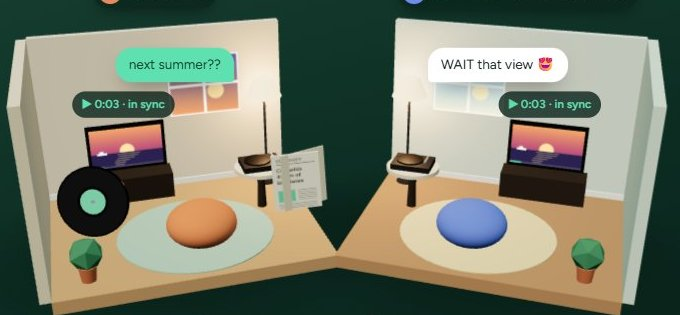
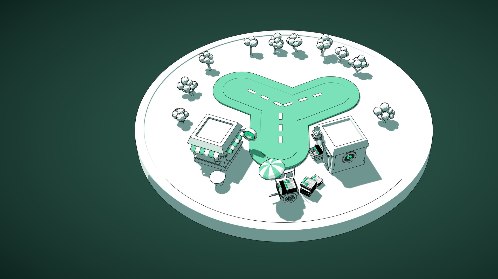

Watch togetherPress play once. Everyone watches in sync.
Watch the same reel at the same moment, and talk over it on a call.

To Yab is to send a reel, a song or a headline to a friend, then chat, call or watch it together. One friend or a whole group.
On most apps a share ends at “sent”. On Yaaber it opens a chat with the person you sent it to, so you can talk about the reel or song right there.
Reels, music and live news, picked around what you love.
Send it to a friend or a group, with a note if you like.
Chat, call, or press play together and watch in sync.
Share, chat, call and watch in one app.

Watch togetherWatch the same reel at the same moment, and talk over it on a call.
Pin posts to a friend's Wall with a note. A scrapbook you build together.
Every shared reel, song or story arrives ready to talk about.
Go from a message to a call in one tap.
World, tech, business and local news, one tap from your friends.
These are the safety features in the app today.
Explore Yaaber as a guest. No account needed to see what it's like.
Yaaber asks before loading content from other services, like YouTube.
Chats are sorted into friends and groups, so you know who you're talking to.
Something wrong? Report it from inside the app, with the details the team needs.
A Companion lives inside Yaaber and guides people to the right information, person or service. Pick an industry to see how.
The web app is open to everyone today. iPhone and Android are in invite-only testing.
Look around as a guest, or create a profile. Works on phone, tablet and computer.
Open YaaberTo yab something is to share it and start talking about it: a reel, a song or a headline sent to a friend that opens straight into a chat, a call or a watch-together.
Not to look around. Explore as a guest first, and create a profile when you want to share and chat.
No. Yaaber runs in your browser on phone, tablet or computer. Phone apps are in testing.
The people you send it to: one friend, or a group. If something goes wrong, report it from inside the app.
A guide inside Yaaber for organisations like colleges, clinics and clubs. It helps people find the right information, person or service. It's in development, with live demos.
Yaaber is built on one idea: sharing something should start a conversation. The team is growing, with roles open in Hyderabad.
Open Yaaber in your browser and send your first one to a friend.